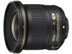
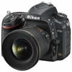

器材库 > 35mm画幅AF定焦镜头 > AF-S 20/1.8G ED

详细规格
发布日期
2014-09-12
厂家推荐价格
5,700.00 （人民币）
焦距
20mm
最大光圈
1.8
最小光圈
16
镜头结构
13片/11组
非球面镜片
2片
低/超低色散镜片
2片
光圈叶片
7片
最近对焦距离
20cm
驱动马达
SWM（宁静波动马达）
滤镜口径
77mm
镜头卡口
Nikon F
防抖
否
颜色
黑/黑色
尺寸
82.5×80.5mm
重量
355g
吴奈2015-05-23 13:084.25 分
操作性 3.00耐用性 4.00性价比 4.50解像力 5.00色彩还原 4.50机械结构 4.50
wingszero2014-09-22 04:29
产品图 / 样片
